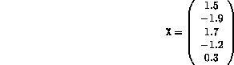
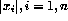

Declare a constant arrays A and X where:

a) Using the relevant intrinsics set M and N to be the extents of A
b) Print the array A out row by row,
c) Write a Fortran 90 program which use intrinsics to print out the following:
i) The sum of the product of the columns of A (use
intrinsics)
ii) The product of the sum of the row elements of
A
(use intrinsics)
iii) The sum of squares of the elements of X
iv) The mean of the elements of X
v) The sum of the positive elements of X
vi) The infinity norm of X i.e. the largest of (  )
vii) The one norm of A i.e. the largest column sum of